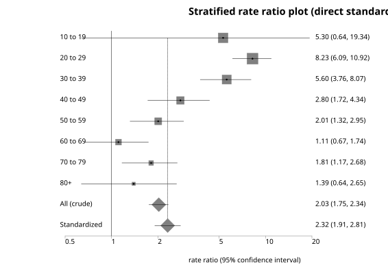
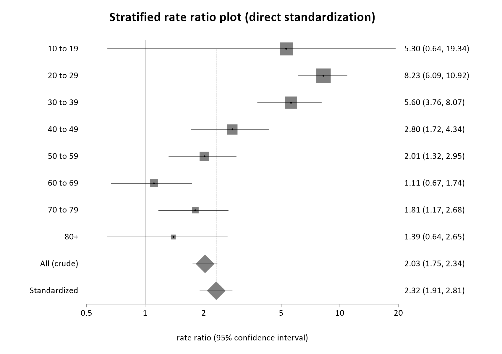

Standardize and Compare Two Rates
Menu location: Analysis_Rates_Standardize and Compare Two Rates
This function calculates directly standardized rates (DSR) for two study populations, and then compares the DSRs as a rate ratio. Stratum-specific rates are compared also.
DSR is simply a weighted mean event rate for a study population, using the group/stratum sizes of a reference population as the weighting scheme. Standardized or adjusted rates are summary index measures for the purpose of comparison only; their magnitude has no intrinsic value.
The choice of a reference or standard population is important; it must relate to the population under study naturally.
Please note that standardization is not a substitute for individual comparisons of stratum-specific rates. This function produces a plot of stratum-specific rate ratios in addition to comparing the standardized rates.
Direct standardization is not appropriate if there is not a consistent relationship between stratum-specific rates in different populations being compared. There are pitfalls in using directly standardized rates; if you have any doubts then please consult with an Epidemiologist and/or Statistician.
Some of the methods used here are unreliable with small numbers; generally, there should be at least 25 events observed overall and at least one event in each stratum. If the number of events is small, consider aggregating strata.
Note that an alternative binomial method is provided for situations where your observed rates are too large for the Poisson distribution to be used, namely one or more rates r are not so small that 1-r can be considered almost equal to 1.
See also:
Direct standardization
Comparison of two crude rates
Poisson rate confidence interval
- which provide some of the calculations given here either in more detail or with more options.
Data input
- Number of events for each group from index/study populations a and b
- Person-time for each group from index/study populations a and b (e.g. size of each group if just one year observed and all subjects followed up)
- Group sizes or weights from a reference/standard population
- Group/stratum labels, e.g. age bands
Technical validation
Exact Poisson confidence limits for the crude rates in both study populations are found as the Poisson means, for distributions with the observed number of events and probabilities relevant to the chosen confidence level, divided by time at risk. The relationship between the Poisson and chi-square distributions is employed here (Ulm, 1990):
$\displaystyle \text{Y}_\text{l}=\frac{\chi^2_{2Y,\space \alpha/2}}{2} \\
\displaystyle \text{Y}_\text{u}=\frac{\chi^2_{2(Y+1),\space 1-\alpha/2}}{2} \\$
- where Y is the observed number of events, Yl and Yu are lower and upper confidence limits for Y respectively, χ²ν, α is the chi-square quantile for upper tail probability α on ν degrees of freedom.
The two crude rates are compared as a ratio using Poisson distribution and test-based methods (Sahai and Khurshid, 1996):
$\displaystyle \widehat{\text{IRR}}=\frac{a}{PT_1}/\frac{b}{PT_2} \\
\displaystyle \widehat{\text{IRR}} \space \text{CI} = \left( \frac{PT_2}{PT_1}\right) \left( \frac{a}{b+1}\right) \frac{1}{F_{\alpha/2, \space 2(b+1), \space 2a}} \text{ to } \left( \frac{PT_2}{PT_1}\right) \left( \frac{a+1}{b}\right) F_{\alpha/2, \space 2(a+1), \space 2b}$
- where IRR hat is the point estimate of the incidence rate ratio, a and b are the events observed in the exposed and non-exposed populations, PT1 and PT2 are their person-time and F is a quantile of the F distribution (denominator degrees of freedom are quoted last).
Approximate confidence intervals for the DSR are calculated firstly by Chiang's normal approximation to Poisson rate sums (Chiang, 1961; Keyfitz, 1966; Breslow and Day, 1987; Armitage and Berry, 1994); the improved approximation adjusted for the total number of observed events (Dobson et al., 1991) is given by the direct standardization function.
$\displaystyle \text{DSR}=\frac{\displaystyle \sum_{i=1}^k N_ir_i}{\displaystyle \sum_{i=1}^k N_i} \\
\displaystyle r_i=y_i/n_i \\
\displaystyle w_i=\frac{N_i}{\displaystyle \sum_{i=1}^k N_i} \\
\displaystyle v=\frac{\displaystyle \sum_{i=1}^k N^2_ir_i/n_i}{\displaystyle \left( \sum_{i=1}^k N_i\right)^2} \\
\displaystyle \text{CI}=\text{DSR}\pm z_{\alpha/2} \sqrt{v} \\$
- where v is the approximate (Chiang) variance, wi is the reference weight for the ith stratum, ri is the observed study rate for the ith stratum, Ni is the reference population size for the ith stratum, yi is the number of events observed in the ith stratum of the study population, ni is the person-time for the ith stratum of the study population, zα/2 is the 100(1 - α/2) centile of the standard normal distribution. For large rates, the binomial variance is used, where r(1-r) is substituted for r in the variance formula above.
Approximate confidence intervals for standardized rate ratios are calculated as follows (Newman, 2001; Armitage et al., 2001):
$\displaystyle \text{SRR}=\frac{\text{DSR}_\text{a}}{\text{DSR}_\text{b}} \\
\displaystyle \text{var}(\log(\text{SRR}))=\frac{v_a}{\text{DSR}_a^2}+\frac{v_b}{\text{DSR}_b^2} \\
\displaystyle \text{CI}=\exp \left[ \log(\text{SRR}) \pm z_{\alpha/2} \sqrt{\text{var(log(SRR))}} \right]$
- where SRR is the standardized rate ratio, var(log SRR) is the approximate variance of the natural logarithm of SRR, DSR and v are the directly standardized rate and its variance as above, zα/2 is the 100(1 - α/2) centile of the standard normal distribution, and CI is the approximate confidence interval for SRR. For large rates, the binomial variance is used, where r(1-r) is substituted for r in the variance formulae above.
Example
From Newman (2001) p 254:
Test workbook (Rates worksheet: d1, pt1, d2, pt2, ref, age strata).
The following data relate to a retrospective cohort study of 2122 males who received treatment for schizophrenia in the province of Alberta, Canada during 1976-1985. The standard/reference population was taken as the Alberta general population in 1981.
| Age group |
Deaths in Cohort |
Person-Years in Cohort |
| 10-19 |
2 |
285.1 |
| 20-29 |
55 |
4,179.1 |
| 30-39 |
32 |
3,291.2 |
| 40-49 |
21 |
1,994.7 |
| 50-59 |
27 |
1,498.9 |
| 60-69 |
19 |
763.5 |
| 70-79 |
25 |
254.4 |
| 80 and over |
9 |
46.7 |
| Age group |
Deaths in Alberta |
People in Alberta (reference size) |
| 10-19 |
267 |
201,825 |
| 20-29 |
421 |
263,175 |
| 30-39 |
306 |
176,140 |
| 40-49 |
431 |
114,715 |
| 50-59 |
836 |
93,315 |
| 60-69 |
1,364 |
60,835 |
| 70-79 |
1,861 |
34,250 |
| 80 and over |
1,797 |
12,990 |
To analyse these data in StatsDirect you must select Standardize and Compare Two Rates from the rates section of the analysis menu. Note that annual mortality rates are often expressed as rates per 100000 population or units of person time (i.e. 100000 person years).
For this example:
Comparison of two directly standardized rates
| Stratum |
a |
Person-time exposed |
b |
Person-time not exposed |
Label
|
| 1 |
2 |
285.1 |
267 |
201825 |
10 to 19 |
| 2 |
55 |
4179.1 |
421 |
263175 |
20 to 29 |
| 3 |
32 |
3291.2 |
306 |
176140 |
30 to 39 |
| 4 |
21 |
1994.7 |
431 |
114715 |
40 to 49 |
| 5 |
27 |
1498.9 |
836 |
93315 |
50 to 59 |
| 6 |
19 |
763.5 |
1364 |
60835 |
60 to 69 |
| 7 |
25 |
254.4 |
1861 |
34250 |
70 to 79 |
| 8 |
9 |
46.7 |
1797 |
12990 |
80+ |
| Stratum |
Rate ratio |
95% CI (exact Poisson) |
Weight |
Label
|
| 1 |
5.302693 |
0.638882 |
19.343485 |
0.210839 |
10 to 19 |
| 2 |
8.227018 |
6.094736 |
10.916013 |
0.27493 |
20 to 29 |
| 3 |
5.596703 |
3.761033 |
8.069297 |
0.184007 |
30 to 39 |
| 4 |
2.802107 |
1.716758 |
4.338327 |
0.119839 |
40 to 49 |
| 5 |
2.010649 |
1.317034 |
2.946823 |
0.097483 |
50 to 59 |
| 6 |
1.1099 |
0.666146 |
1.740021 |
0.063552 |
60 to 69 |
| 7 |
1.808577 |
1.167342 |
2.678348 |
0.03578 |
70 to 79 |
| 8 |
1.393114 |
0.63598 |
2.650516 |
0.01357 |
80+ |
| All |
2.028063 |
1.746703 |
2.342474 |
1 |
All (crude) |
Analysis model for rates: Poisson (small rates)
Rates are expressed per 1,000 units of person time:
Crude rate exposed = 15.430094
Exact 95% CI = 13.313979 to 17.786968
Crude rate not exposed = 7.608293
Exact 95% CI = 7.434549 to 7.785072
Standardized rate exposed = 17.616898
Approximate 95% CI = 14.217636 to 21.016159
Standardized rate not exposed = 7.608293
Approximate 95% CI = 7.433557 to 7.783028
Standardized rate ratio = 2.315486
Approximate 95% CI = 1.906565 to 2.812113


 R code
R code
This R code reproduces the example above. It needs no packages and was checked with R 4.6.1. Paste it into R, or save it as a script and run it.
# Standardize and compare two rates: the StatsDirect help example (Newman 2001, deaths
# in a cohort of men treated for schizophrenia and in the Alberta population, in eight
# age strata; the test workbook's Rates worksheet columns d1, pt1, d2, pt2, ref and
# age strata) in R
a <- c(2, 55, 32, 21, 27, 19, 25, 9) # deaths in the cohort
pt1 <- c(285.1, 4179.1, 3291.2, 1994.7, 1498.9, 763.5, 254.4, 46.7) # its person-years
b <- c(267, 421, 306, 431, 836, 1364, 1861, 1797) # deaths in Alberta
pt2 <- c(201825, 263175, 176140, 114715, 93315, 60835, 34250, 12990) # its people
ref <- pt2 # the reference population
strata <- c("10 to 19", "20 to 29", "30 to 39", "40 to 49", "50 to 59", "60 to 69",
"70 to 79", "80+")
k <- length(a)
per <- 1000 # rates are shown per 1,000 person-years
z <- qnorm(0.975) # for 95% confidence intervals
six <- function(x) formatC(x, digits = 6, format = "f", drop0trailing = TRUE)
# R's standard test compares the two crude rates: its estimate is the ratio of the
# rates and its confidence interval is the exact one of the report, from the binomial
# distribution of the exposed deaths among all deaths, conditional on their total
crude <- poisson.test(c(sum(a), sum(b)), c(sum(pt1), sum(pt2)))
print(crude)
# The same test on each stratum gives the stratum rate ratios with their exact
# intervals; the weight of a stratum is its share of the reference population
rr <- (a / pt1) / (b / pt2)
exact <- sapply(1:k, function(i) {
poisson.test(c(a[i], b[i]), c(pt1[i], pt2[i]))$conf.int
})
w <- ref / sum(ref)
cat("Stratum rate ratios with exact Poisson 95% CI and weights\n")
print(data.frame(stratum = c(1:k, "All"), RR = six(c(rr, crude$estimate)),
lower = six(c(exact[1, ], crude$conf.int[1])),
upper = six(c(exact[2, ], crude$conf.int[2])), weight = six(c(w, 1)),
label = c(strata, "All (crude)")), row.names = FALSE)
# The crude rates with exact Poisson intervals: poisson.test on one count gives the same
# limits as the chi-square (gamma) quantiles of the report's formula
crude_ci <- function(events, time) {
r <- poisson.test(events, time)
per * c(r$estimate, r$conf.int)
}
e <- crude_ci(sum(a), sum(pt1))
cat("Crude rate exposed =", six(e[1]), "\n")
cat("Exact 95% CI =", six(e[2]), "to", six(e[3]), "\n")
ne <- crude_ci(sum(b), sum(pt2))
cat("Crude rate not exposed =", six(ne[1]), "\n")
cat("Exact 95% CI =", six(ne[2]), "to", six(ne[3]), "\n")
# Base R has no standardisation function, so the directly standardised rates follow
# the formulae above: each population's stratum rates weighted by the reference
# population, with the Poisson variance of that weighted sum (Chiang) and a normal
# interval; the ratio of the two rates has a normal interval on the log scale
dsr <- function(events, time) {
rate <- sum(w * events / time)
v <- sum(w^2 * events / time^2)
c(rate = rate, v = v, lower = rate - z * sqrt(v), upper = rate + z * sqrt(v))
}
s1 <- dsr(a, pt1)
s2 <- dsr(b, pt2)
cat("Standardized rate exposed =", six(per * s1["rate"]), "\n")
cat("Approximate 95% CI =", six(per * s1["lower"]), "to", six(per * s1["upper"]), "\n")
cat("Standardized rate not exposed =", six(per * s2["rate"]), "\n")
cat("Approximate 95% CI =", six(per * s2["lower"]), "to", six(per * s2["upper"]), "\n")
srr <- s1["rate"] / s2["rate"]
se_log <- sqrt(s1["v"] / s1["rate"]^2 + s2["v"] / s2["rate"]^2)
cat("Standardized rate ratio =", six(srr), "\n")
cat("Approximate 95% CI =", six(exp(log(srr) - z * se_log)), "to",
six(exp(log(srr) + z * se_log)), "\n")
# The plot that follows in the report: each stratum's rate ratio and exact interval,
# a square that grows with the stratum's weight, then the crude and the standardized
# ratios as diamonds, on a log scale with a line at a ratio of one
# (a stratum with no exposed events has lower limit 0, which a log axis cannot show)
est <- c(rr, crude$estimate, srr)
lower <- c(exact[1, ], crude$conf.int[1], exp(log(srr) - z * se_log))
upper <- c(exact[2, ], crude$conf.int[2], exp(log(srr) + z * se_log))
y <- (k + 2):1
par(mar = c(5, 7, 4, 2))
plot(NA, xlim = range(lower, upper), ylim = c(0.5, k + 2.5), log = "x", yaxt = "n",
ylab = "", xlab = "rate ratio (95% confidence interval)",
main = "Stratified rate ratio plot (direct standardization)")
axis(2, at = y, labels = c(strata, "All (crude)", "Standardized"), las = 1,
tick = FALSE)
abline(v = 1, lty = 3)
segments(lower, y, upper, y)
points(rr, y[1:k], pch = 15, cex = 0.5 + 2 * sqrt(w / max(w)))
points(est[k + 1:2], y[k + 1:2], pch = 18, cex = 2.5)
abline(v = srr, lty = 2)
confidence intervals